Git-Native API contracts and client
No seats, no workspaces behind a paywall. Collaboration made easy and free for everyone.
$ cargo install apic-cli
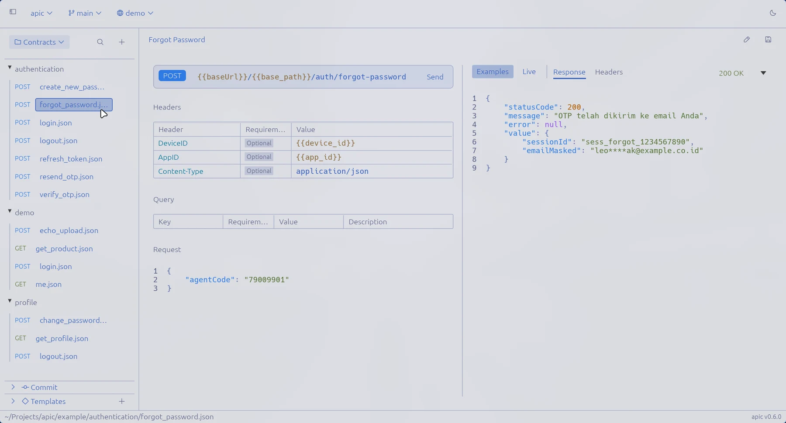
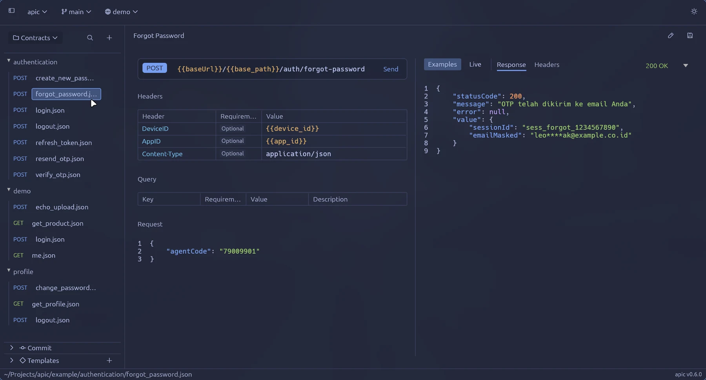
Contracts are JSON in your repo
Writes one JSON file per endpoint, in the folder you name. It starts from your team’s template, so the base URL and headers are already there.
{
"name": "create",
"method": "POST",
"url": "https://api.example.com/orders",
"request": { "sku": "tee-black-m", "qty": 2 },
"responses": [
{ "code": 201, "description": "Created" }
]
}Adding an error response is a four-line change. Your team reviews it in the pull request, next to the code that returns it.
@@ -23,6 +23,10 @@
{
"code": 201,
"description": "Created"
+ },
+ {
+ "code": 409,
+ "description": "Conflict"
}
]Sends the request with values from .apic/env/demo.toml and prints the reply. Local secrets stay in a gitignored file.
HTTP 200 OK 491 ms
{
"id": 1,
"title": "Essence Mascara Lash Princess",
"price": 9.99
}Review contracts like code
Diffs, branches and merge conflicts open in apic-gui, field by field.
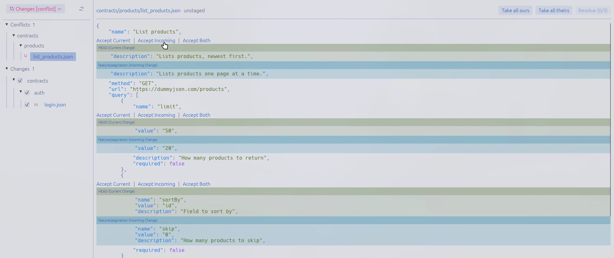
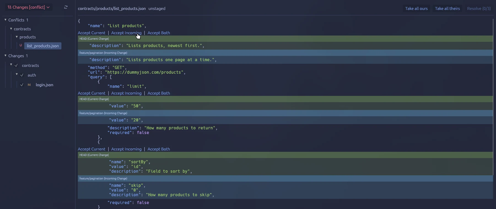
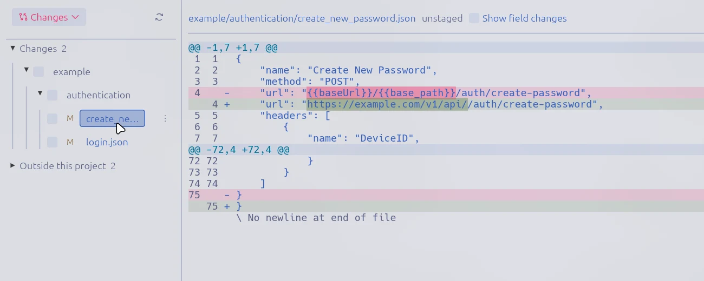
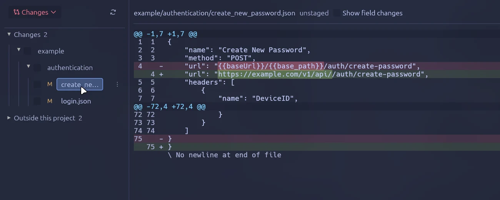
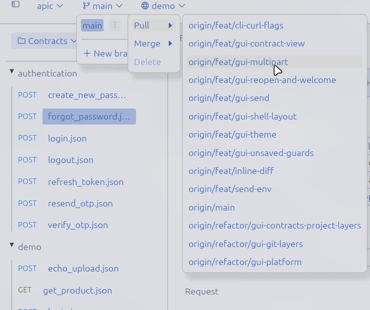
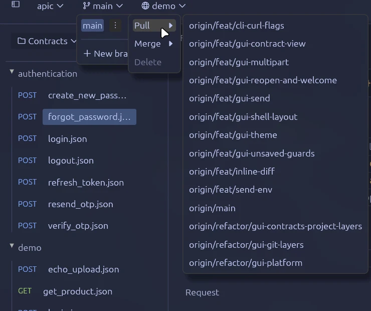
The same files, in a desktop app
Edit tables and JSON, send requests, and keep every change in git.
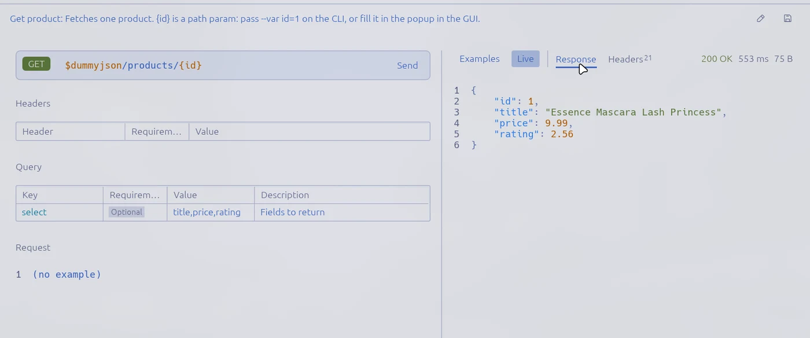
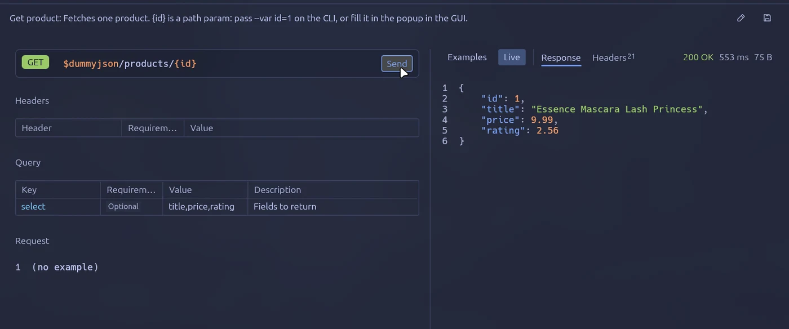
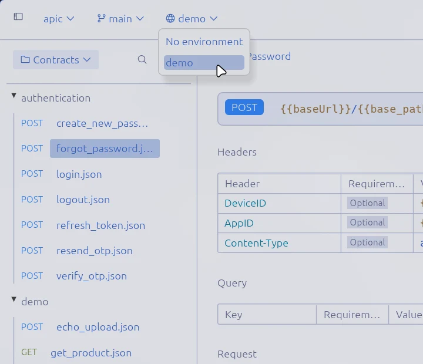
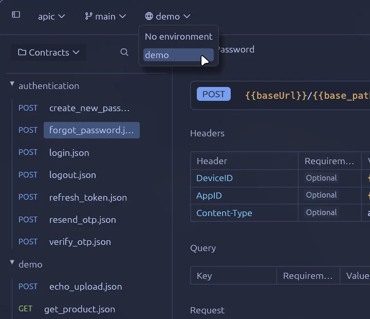
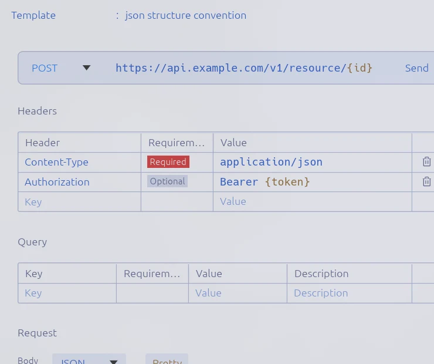
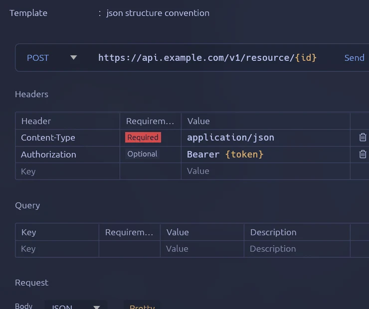
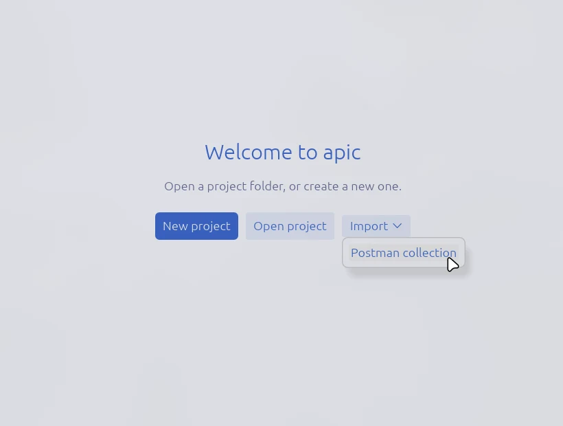
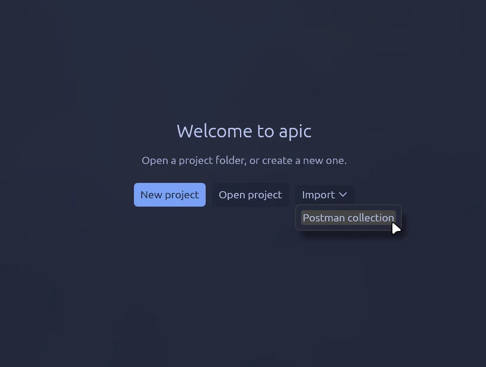
Install
Prebuilt archives with checksums for Linux, macOS and Windows are on the releases page.
| Arch | yay -S apic-bin | |
|---|---|---|
| Fedora | sudo dnf copr enable rizukirr/apic && sudo dnf install apic-cli apic-gui | |
| Flatpak | flatpak install io.github.rizukirr.apic | |
| Windows | winget install rizukirr.apic rizukirr.apic-gui | |
| Cargo | cargo install apic-cli apic-gui |
Docs
- CommandsEvery command, flag and example.
- Contract formatThe JSON schema, templates and config.
- SendingEnvironments, variables and apic send.
- Desktop appEditing, Postman import and git.